Localization doesn't break screens one at a time — it breaks components. Lipi finds the component before you ship.
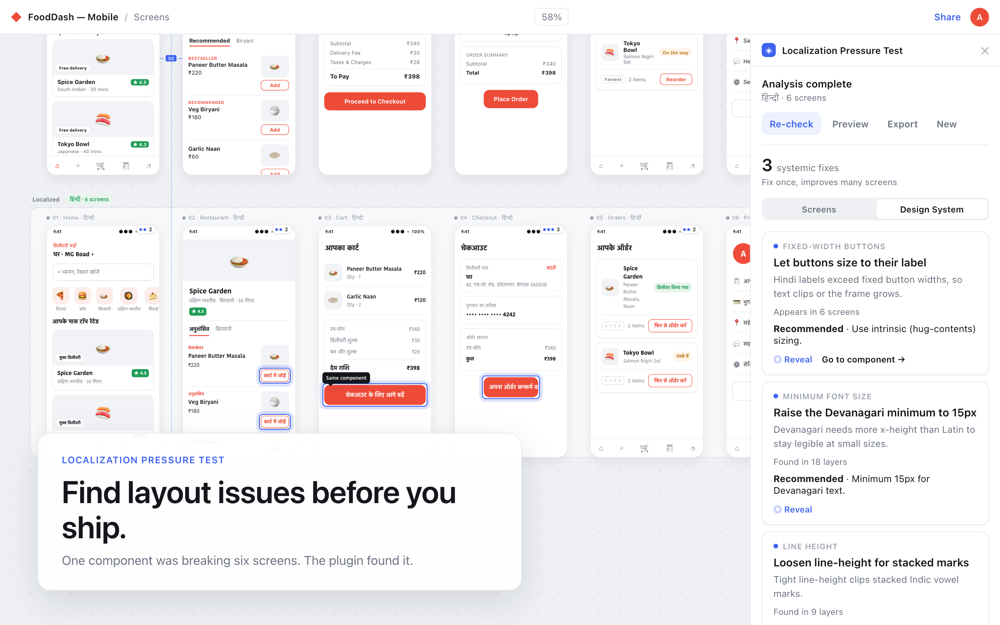
Teams design in English, localize late — and discover the damage in a QA build, one screen at a time, when the real cause was one shared component.
Indian scripts don't behave like Latin. Hindi runs longer and overruns fixed-width buttons; Devanagari stacks taller and clips under tight line-heights; a font without the right glyphs falls back to tofu. Each is invisible in the English mockups everyone signs off on.
By the time it surfaces, the fix isn't cosmetic and it isn't local — the same Button, Card or Chip is breaking on every screen it appears on. So it ships broken, or it slips the release. Localization QA becomes a manual, screen-by-screen hunt for problems that share a single root cause.
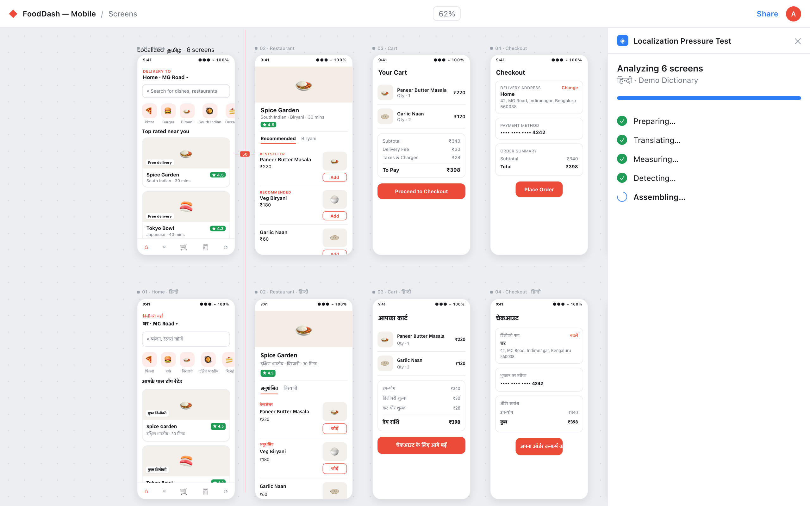
Primary user: product designers shipping to Indian markets. Downstream: localization, QA and front-end, who inherit the problem last and cheapest to have caught first.
The "why now" anchor — India as a priority market for your target companies, one credible cited stat, and (ideally) one screenshot of a real shipped app with visible localization breakage.
Everything after this came from evidence, not taste. The pattern I kept hitting: a small number of components caused most of the failures.
Two reframes the whole product hangs on.
Measure geometry, not text. The problem was never translation quality — it's layout under pressure. So Lipi measures: it clones each frame, localizes it, and compares baseline vs. localized geometry per layer — width, height, line-box, glyph coverage. It reports pressure, not opinions. That's the Delta Engine.
Surface the root cause, not a bug list. A list of 47 issues is noise. "One fixed-width Button component — 6 screens" is a decision. So findings roll up to their systemic cause, and one fix clears them everywhere.
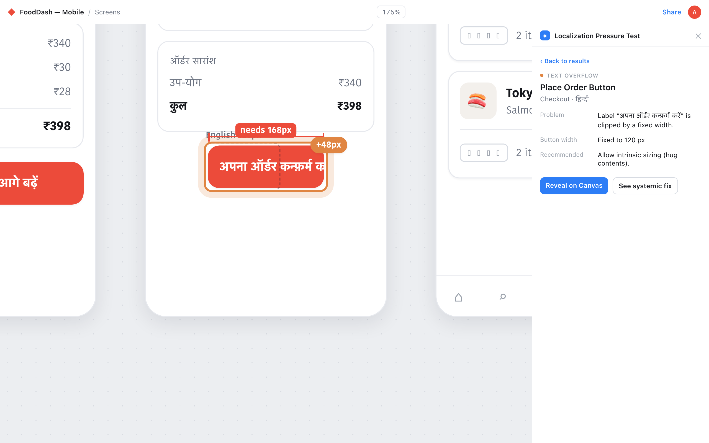
One loop — select, localize, evaluate, reveal, find the root cause, fix once, re-check, export. The clean captures do the documenting.
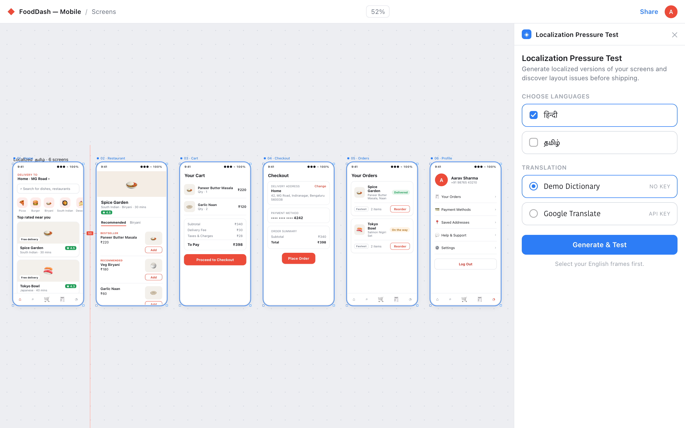
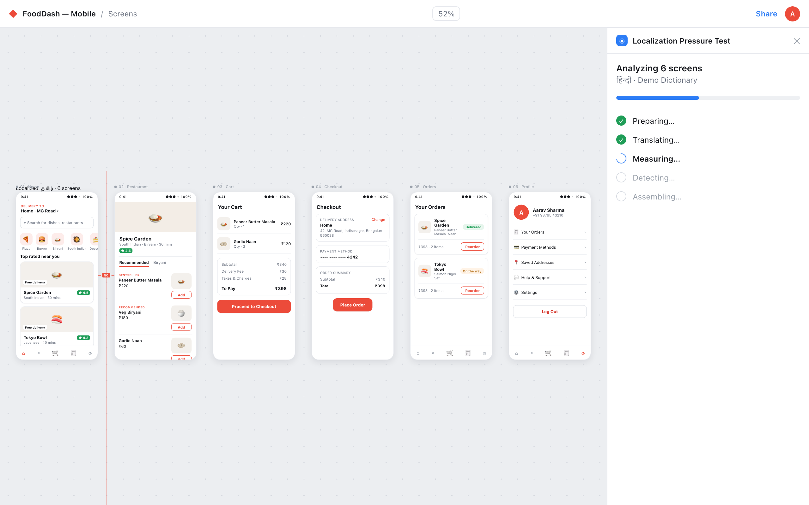
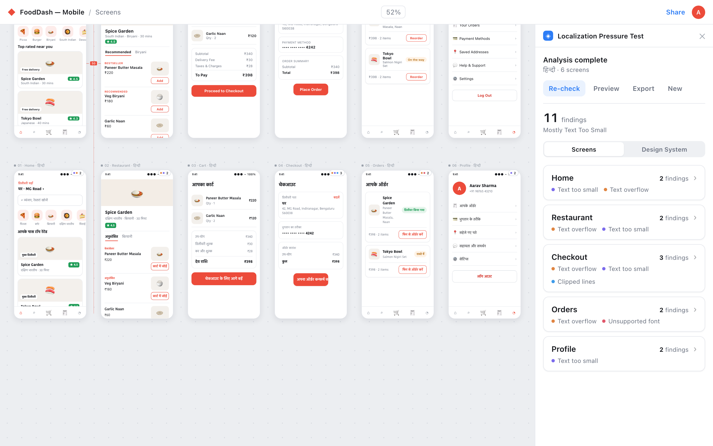
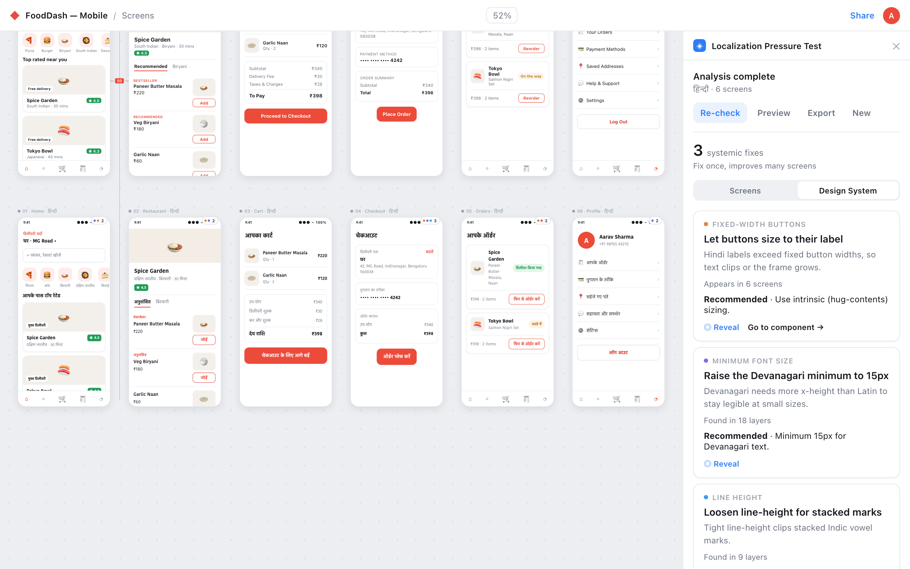
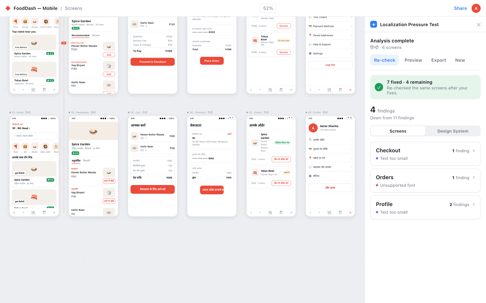
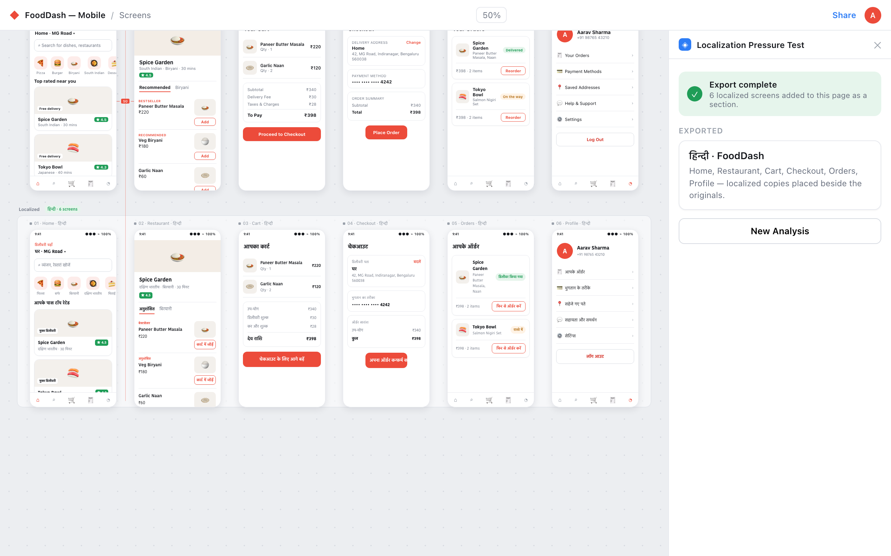
The parts a senior reviewer reads for — decision, why, and what I gave up.
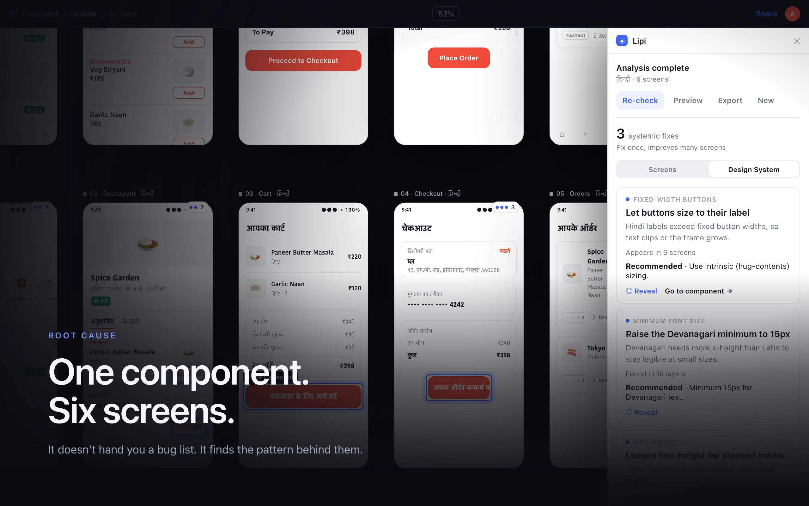
The story, end to end: looks fine → translation breaks it → Lipi finds the pattern → one fix, many screens → confidence.
The impact line — time saved, issues caught pre-dev, adoption if published. If there's no number yet, state the validated capability honestly and what you'd measure next.
Reflection. The geometry model is deliberate about what it can't yet judge — semantic truncation, RTL, and real remote-font rendering are open. The UX still leans on the designer reading a little; the next cut pushes more of the "what to fix" onto the canvas. And the honest caveat throughout: this documents a working plugin, presented through a controlled recreation built for reliable capture.
I designed the product and its launch together: one accent language, a dark workspace, a comprehensive documentation set, and a cinematic film — video tells the story, screenshots document the product.
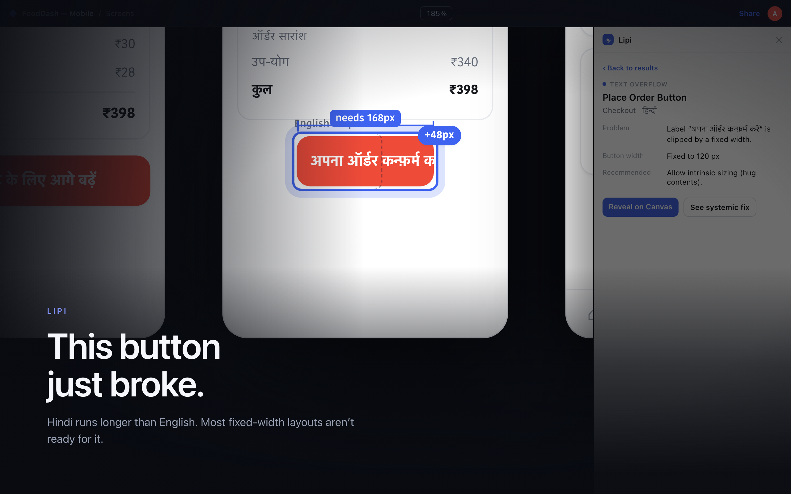
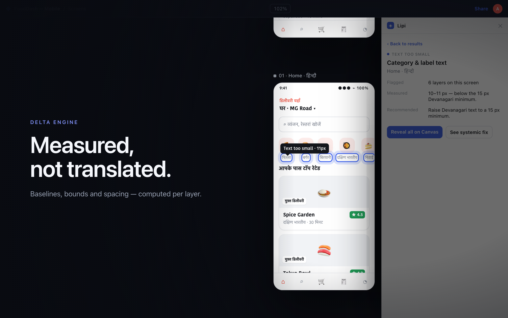
Every plugin state, documented. Onboarding, API-key, empty and success states, all four detection types, bilingual, before/after — captured clean, like a real app.
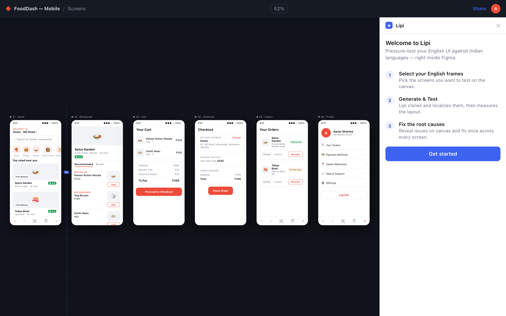
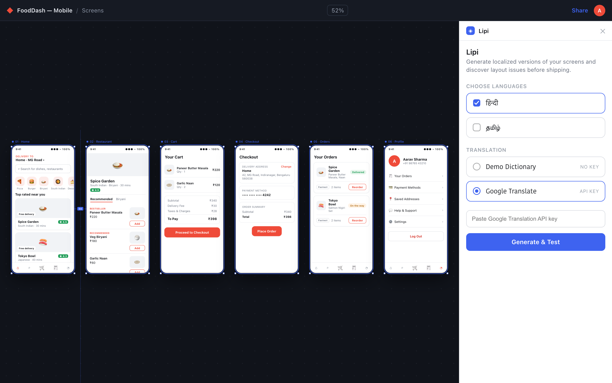
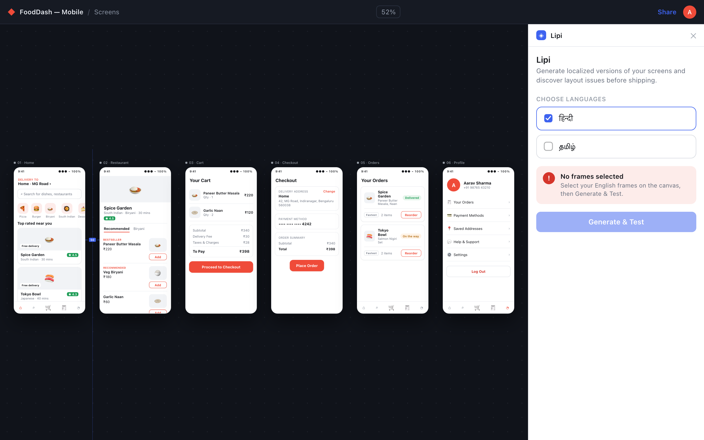
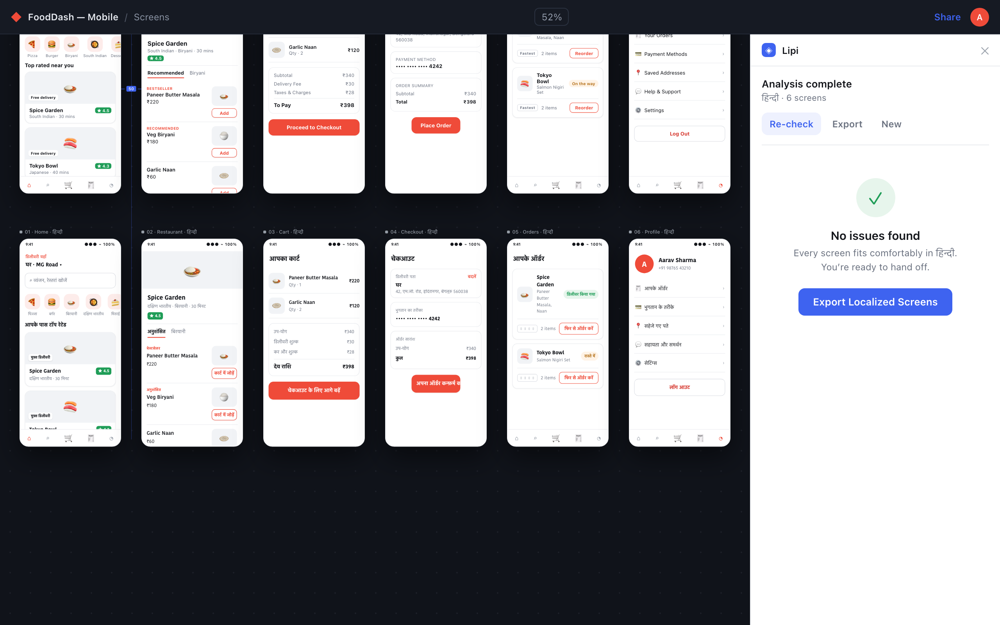